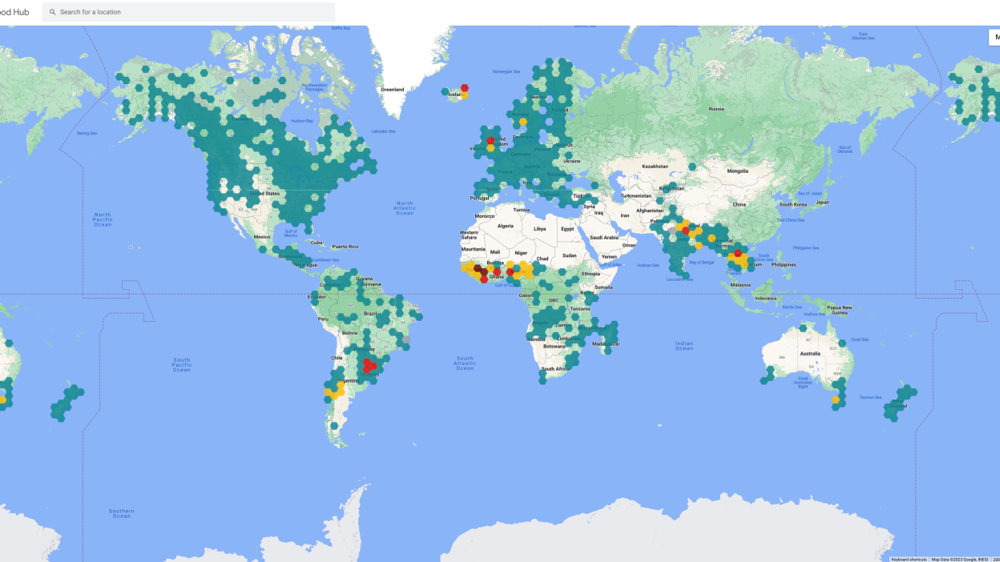

L'IA dans la Prédiction des Inondations
Systèmes d'Alerte Précoce
Analyse en temps réel des données météorologiques et hydrologiques.
Modèles prédictifs basés sur l'apprentissage IA
- Google Flood
- Microsoft AI for Earth
- FloodML
- IBM Watson + APIs météo
- Copernicus EMS
Cartographie dynamique des zones à risque.
Avantages des Prédictions par IA
Anticipation des inondations jusqu'à 7 jours à l'avance.
Précision accrue des prévisions.
